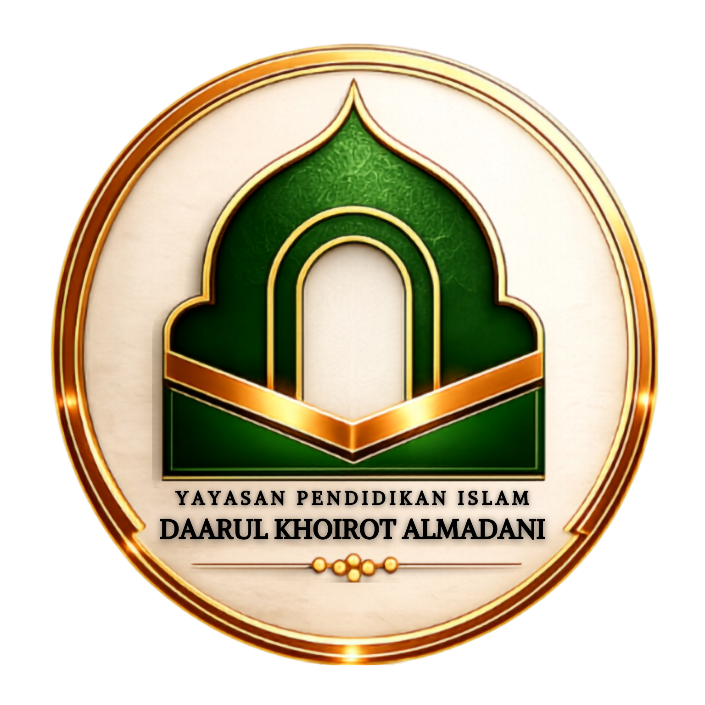
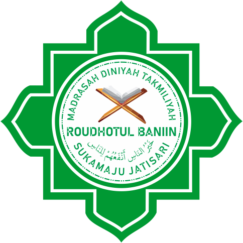

Menuju Generasi Cerdas Berilmu Mulia Berperilaku

Madrasah Diniyah Takmiliyah untuk pendalaman ilmu Fiqih, Aqidah, dan Bahasa Arab.
MDT Roudhotul Baniin menyediakan jenjang pendidikan lanjutan berstruktur yang didesain khusus bagi santri setelah menyelesaikan fase TPQ. Fokus utama madrasah ini diarahkan pada penguatan dan pendalaman dasar keilmuan syariat Islam.
Pembelajaran dikawal oleh dewan asatidz pembimbing dengan metode yang sistematis, interaktif, dan berakhlak demi mencetak generasi muda santri yang berwawasan luas sekaligus taat beribadah.